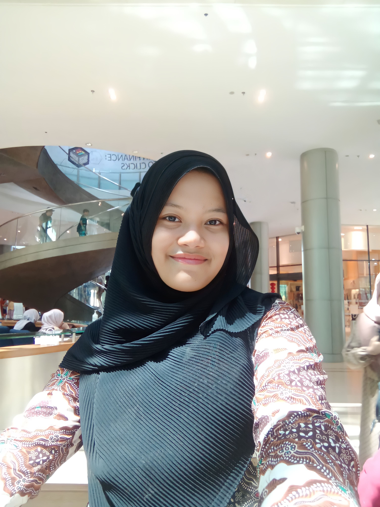

SM ENTERTAINMENT INDONESIA

Nama saya Sukma Amalia Sari, saat ini berusia 20 tahun. Saya merupakan mahasiswa Program Studi Sistem Informasi di STMIK Triguna Dharma. Saya memiliki ketertarikan pada bidang keamanan data, pengelolaan informasi, serta pemecahan masalah berbasis sistem. Di luar kegiatan akademik, saya memiliki hobi mendengarkan musik, membaca novel, dan memasak. Melalui hobi tersebut, saya mengembangkan nilai ketelitian, kreativitas, dan kesabaran yang turut mendukung proses belajar dan pengembangan diri. Saya juga dikenal sebagai pribadi yang terbuka terhadap hal-hal baru, senang berbagi ide, serta aktif dalam berdiskusi dan bekerja sama dengan orang lain. Ke depan, saya berharap dapat menyelesaikan studi dengan baik dan berkarier di bidang yang selaras dengan minat serta kompetensi saya, khususnya dalam bidang keamanan data.
Sukma Amalia Sari (수크마 아말리아 사리, lahir 2005) merupakan perempuan asal Temanggung, Jawa Tengah. Ia adalah anak bungsu dari dua bersaudara. Pada tahun 2007, ia berpindah dari Temanggung ke Kota Medan, Sumatera Utara, dan menetap di kota tersebut hingga saat ini. Meskipun lahir di Temanggung, Sukma tumbuh dan berkembang di Medan. Riwayat pendidikan Sukma dimulai di MIS Terpadu Bina Bangsa, kemudian berlanjut ke MTs Negeri 1 Deli Serdang, dan dilanjutkan ke SMK Swasta Dwitunggal 2 Tanjung Morawa. Sejak usia dini, ia telah menunjukkan minat pada bidang seni, khususnya mewarnai gambar, dan pernah meraih juara harapan I tingkat kabupaten/kota. Pada masa kanak-kanak, ia juga memiliki ketertarikan terhadap bidang antariksa dan bercita-cita menjadi seorang astronot.
Pada tahun 2024, Sukma mengikuti kegiatan study tour ke Malaysia bersama guru dan rekan sekolahnya. Kegiatan tersebut berlangsung selama tiga hari dua malam, yaitu pada tanggal 17–19 Februari 2024. Perjalanan ini merupakan pengalaman pertamanya berwisata ke luar negeri. Sukma dan lima temannya mengikuti kegiatan tersebut tanpa dipungut biaya, sebagai bentuk apresiasi dari pihak sekolah atas pencapaian mereka sebagai peraih juara umum. Pada tahun yang sama, Sukma menyelesaikan pendidikan tingkat SMK dengan hasil yang memuaskan. Selama masa pendidikan tersebut, ia memperoleh berbagai pengalaman berharga yang membentuk karakter dan kedewasaannya. Saat ini, Sukma sedang menempuh pendidikan Strata 1 (S1) pada Program Studi Sistem Informasi di STMIK Triguna Dharma dan berada di semester tiga. Ia memiliki komitmen untuk menyelesaikan studinya tepat waktu dengan capaian akademik yang baik sebagai wujud tanggung jawab dan dedikasi kepada orang tua serta masa depannya.
L. Lullaby — DEAR J
❝Untukmu, Na Jaemin. Laki-laki tak sempurna, sang pengagum hujan dan sajak.❞
L. Lullaby — After DEAR J
❝Percayakah kau akan sebuah reinkarnasi? Sebuah pengulangan tragedi kisah cinta yang dikenang sepanjang masa.❞
L. Lullaby — WITH J: After He Left Me
❝Maafkan aku, bahkan hingga kau menutup mata, aku tak pernah bisa membahagiakanmu.❞
L. Lullaby — After WITH J: Hereditary
❝Mereka adalah pasangan yang ditentukan oleh langit, dengan takdir yang dibuat di luar batas kemampuan manusia.❞
L. Lullaby — 真実 [TRUTH]: The Prolog
❝Tentang cinta yang murni, keserakahan, hingga pertumpahan darah yang membawa petaka selama ratusan tahun.❞